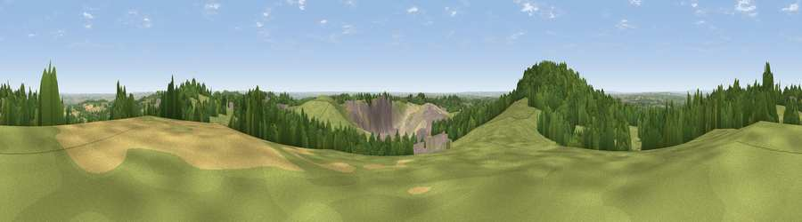

Viewpoint near Stanton under Bardon
#8993 in England · top 6% of its area beats it · near Stanton under BardonThe view, rendered

A 360° render of this exact spot computed from the terrain model, tree cover and land cover — summer colours, afternoon light, calibrated against photographs of famous viewpoints. Real trees, hedges and buildings will differ in detail.
The panorama
Grey silhouette: terrain skyline in each direction (720 bearings, Earth curvature and refraction included). Dashed green: skyline with trees (+15 m) and buildings (+8 m) as obstacles. Blue strip: how far the ground is visible on each bearing.
Where the view opens
Wedge length = distance to the farthest visible ground on that bearing (vegetation-aware). Rings at 10, 25 and 50 km.
What fills the view
50% grassland · 29% woodland · 10% built-up · 7% cropland · 4% bare ground
Angular shares of the visible panorama (visual magnitude), not map area. Landscape diversity 0.55 (0–1 Shannon).
Key numbers
More beautiful places nearby
The staircase of upgrades: each row has a higher view potential than everything closer. Driving times are estimates from straight-line distance, calibrated against real road routing — check an actual route before setting out.
| Place | Direction | Drive | Score |
|---|---|---|---|
| Viewpoint near Stanton under Bardon | WSW · 1 km | ~3 min | 76.0 |
| Viewpoint near Woodhouse Eaves | ENE · 4 km | ~10 min | 77.7 |
| Viewpoint near Mow Cop | NW · 75 km | ~99 min | 80.2 |
| Viewpoint near Little Wenlock | W · 84 km | ~108 min | 84.2 |
| The Wrekin | W · 84 km | ~108 min | 85.0 |
| Viewpoint near Little Wenlock | W · 84 km | ~109 min | 86.6 |
| North Hill | SW · 97 km | ~121 min | 86.8 |
| Worcestershire Beacon | SW · 98 km | ~122 min | 87.1 |
52.71746, -1.30583 · source: screening · position refined by local search. Computed location — check access rights before visiting.